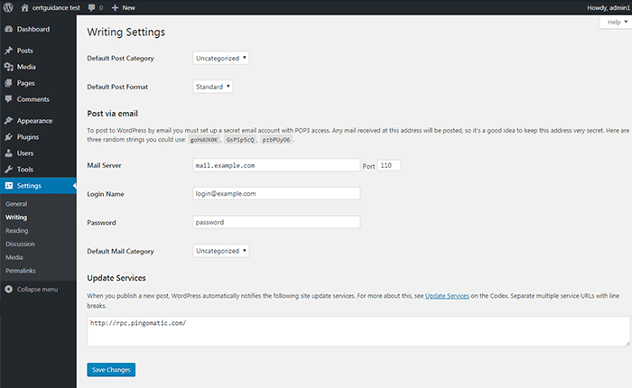

WRITING SETTINGS TAB
DASHBOARD >> SETTINGS >> WRITING
This section contains settings related to the defining default category, post type, post formatting, option for publishing posts via email, and settings for post update services (ping service).
Detail of Writing Tab
- Default Post Category This gives you an option to specify a default post category for any new post you write. You can select a specific category name from drop-down if you have already created one. By default, the post category for new posts is selected as Uncategorized
- Default Post Format This is used by themes to select post format to be applied to a post or create different styles for different types of posts
- Post via e-mail This option uses e-mail address to create posts and publishes posts on your blog through e-mail. To use this, you'll need to set up a secret e-mail account with a POP3 access, and any mail received at this address will be posted
- Update Services This option uses e-mail address to create posts and publishes posts on your blog through e-mail. To use this, you'll need to set up a secret e-mail account with a POP3 access, and any mail received at this address will be posted
Once you click the save changes button, a confirmation text box will appear notifying you that your settings have been saved.